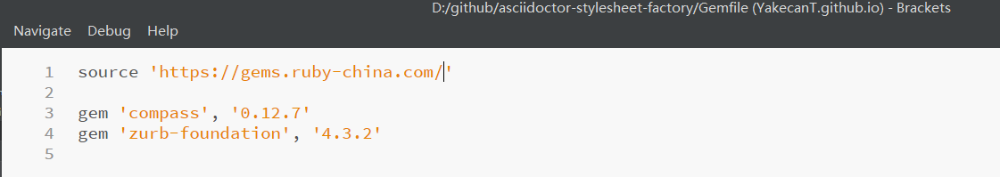
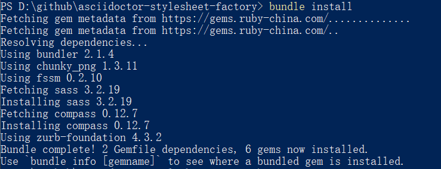
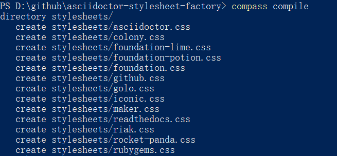

1. 前言
-
提供作为小白的博主，从0开始编写本博客的所有经验技巧
-
由于每个人的知识体系不完全相同，一定会遇到不太明白的地方，不用管，直接往下操作，操作结束了就会有自己的认识
1.1. 适合读者
-
前端小白
-
个人博客编辑者
2. 个人博客road_list
2.1. 思维导图
2.2. to do list
3. icon技巧：fontawesome和fontdiao
4. 图片预览技巧：fancybox
5. 页面编辑技巧：使用AsciiDoctor+模板完成博客页面书写
5.1. AsciiDoctor的安装
AsciiDoctor是使用Ruby语言所写的一款插件，类似MarkDown语法。
-
安装Ruby，到官网下载
-
修改gem sources
-
安装AsciiDoctor，在控制台运行
gem install asciidoctor即可安装，运行$ asciidoctor --version检查版本
|
安装好ruby后，不建议直接使用gem install安装gem，被墙非常慢。 目前国内镜像源为 https://gems.ruby-china.com/ ，打开cmd，运行以下代码修改源 gem sources -l //查看<目前ruby gems源> gem sources -r <目前ruby gems源> //删除目前ruby gems源 gem sources -a https://gems.ruby-china.com/ //新增ruby gems源 |
5.2. AsciiDoctor-stylesheet-factory （模板工厂）
-
从模板工厂的github代码库中，使用`git clone <url>`，clone github 代码库到本地
-
进入本地代码库，使用文本编辑器，修改Gemfile中的source为 https://gems.ruby-china.com/
 -
cd到本地代码库，运行
bundle install
|
官方文档默认读者熟悉Ruby和Gemfile，这里的bundle install，针对指定的项目文件运行，而不是全局安装，因此需要cd到指定的文件目录中才可以 |
安装好相应的gems后，便可以开始制作模板。
-
cd到本地Asciidoctor stylesheet factory代码库
-
运行
compile命令compass compile

现在可以尝试用生成的模板渲染自己的adoc，示例adoc名称为mysample.adoc
adoc和渲染命令如下：
= Introduction to AsciiDoc Doc Writer <doc@example.com> A preface about http://asciidoc.org[AsciiDoc]. == First Section * item 1 * item 2 [source,ruby] puts "Hello, World!"
asciidoctor -a stylesheet=colony.css -a stylesdir=../stylesheets mysample.adoc
上述命令会将colony.css中的内容放到渲染出的html中。
如果希望建立html到css的href，增加一句linkass即可，示例如下：
asciidoctor -a linkcss -a stylesheet=colony.css -a stylesdir=../stylesheets mysample.adoc